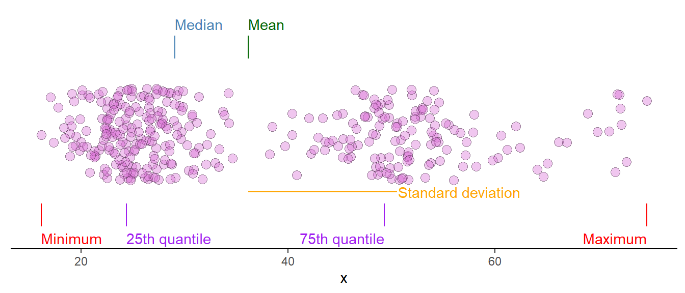

Summarising data
“Summary” functions
R has several “summary” functions used to summarise data into descriptive characteristics. These could describe the location (mean, median, mode), spread (variance, standard deviation) or rank (minimum, quantile, maximum).
A vector of numeric values (integers or decimal numbers) can be summarised using a set of functions in R that gives us several summary statistics.
# Set a seed for the random number generator
set.seed(1)
# Generate 10 random numbers from a normal distribution with mean 0 and SD 1
x <- rnorm(10)
# Calculate summary statistics
summary(x)
fivenum(x)
What statistics?
What statistics do we get from summary and fivenum? Use the R help pages to explore this!
The summary function gives us a multi-statistic summary of vectors (or data frames). We can get these numbers using built in functions also.
| Function call | Statistic |
|---|---|
mean() |
Mean |
median() |
Median |
sd() |
Standard deviation |
var() |
Variance |
min() |
Minimum |
max() |
Maximum |
quantile() |
Quantile |
What statistics?
Use summary functions above to calculate the summary statistics used in summary(x).
Missing values
A common feature of summary functions are the inability to calculate the mean from a set of values that contain missing values.
To overcome this problem we need to add the na.rm = TRUE argument to our summary function.
E.g.:
x <- c(rnorm(10), NA)
mean(x)
mean(x, na.rm = TRUE)Summaries in a pipe
dplyr has a function designed to create summaries. The summarise function will use “summary” functions that returns a single value to summarise the data set.
library(tidyverse)
library(exscidata)
cyclingstudy %>%
summarise(m = mean(VO2.max, na.rm = TRUE))Summaries can be create on grouped data frames. A grouped data frame has additional meta data that groups the data set and many dplyr verbs will use the grouping when performing its actions (e.g. mutate, filter, summarise).
To add a grouping to a data frame use group_by(var), where var is a variable you would want to group on.
Construct a grouped data frame and summarise?
Complete the following code chunk
cyclingstudy %>%
# select participant, time-point and VO2max
select(subject, timepoint, VO2.max) %>%
# Group the data frame by timepoint
# Summarise with mean and standard deviation for vo2max
# Print the results
print()Another alternative is to use the .by argument in a summary function. To group a summary by timepoint and group we would do
cyclingstudy %>%
summarise(.by = c(timepoint, group),
m = mean(VO2.max, na.rm = TRUE),
s = sd(VO2.max, na.rm = TRUE))
Summarise data?
- What is the average (mean)
cmj.maxheight ingroup == "INCR"attimepoint == "meso2"? - What is the standard deviation of
VO2.maxat time-pointmeso3?
Summarise the number of observations per group
The n() function can be used to give us the group size of a grouped summary.
cyclingstudy %>%
summarise(n = n(),
.by = c(group, timepoint))Re-create a summary table
Work in pairs to reproduce this summary data frame:
# A tibble: 3 × 8
group m.age sd.age m.height sd.height m.weight sd.weight n
<chr> <dbl> <dbl> <dbl> <dbl> <dbl> <dbl> <int>
1 INCR 34.7 4.79 181 7.87 81.3 7.86 7
2 DECR 38.4 5.59 178. 4.67 83.5 10.7 7
3 MIX 37.8 7.94 179 5.90 75.3 9.87 6